10 Человеко-лет GWT
Web frameworks. v2009
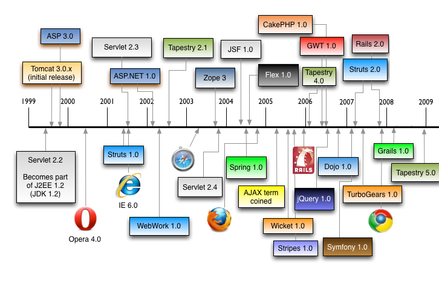GWT or not GWT
Java everywhere

Every browser rocks
Fast & Furious

"I show you how deep the rabbit hole goes"
GWT App Architecture
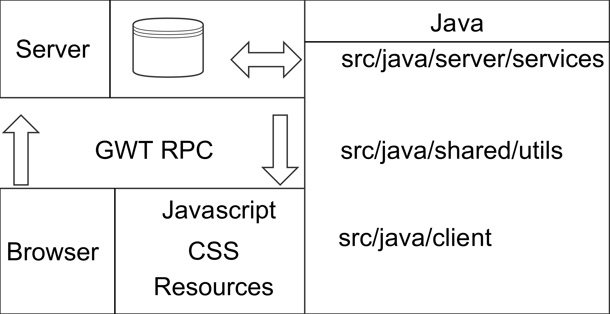Google Gin
-
AbstractGinModule
public class AGinModule extends AbstractGinModule { @Override protected void configure() { bind(EventBus.class) .to(SimpleEventBus.class).in(Singleton.class); } } -
Injector
@GinModules({AGinModule.class}) public interface HelloGinjector extends Ginjector { EventBus getEventBus(); } -
@Inject everywhere
@javax.inject.Inject EventBus bus;
Publish/Subscriber
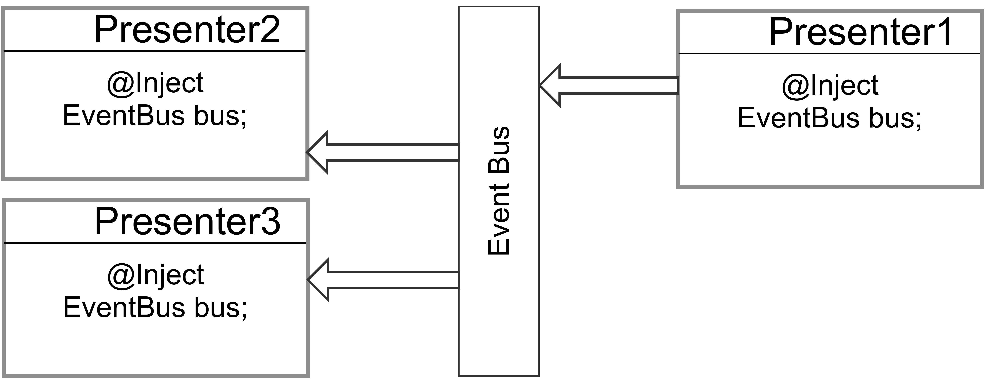MVP
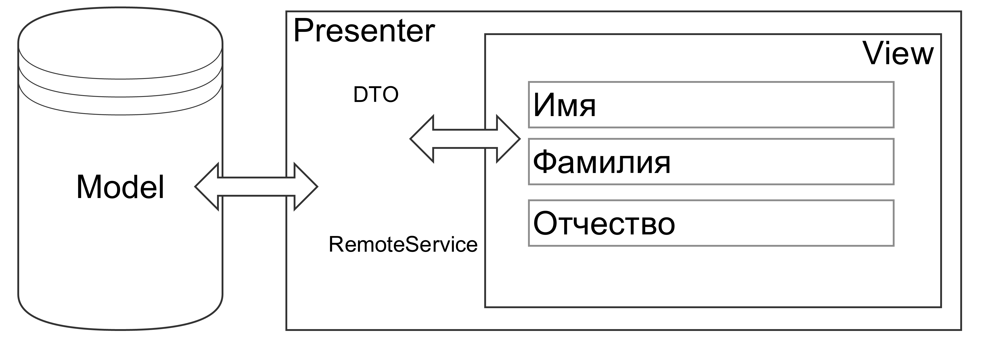All together
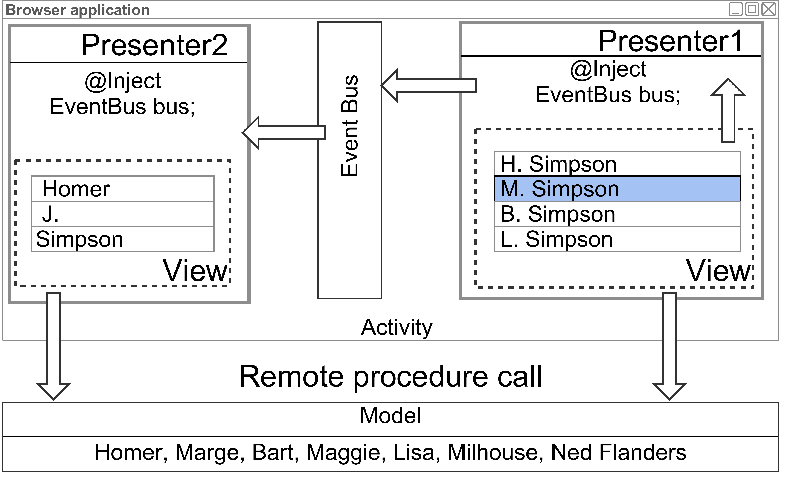RPC Services
- Client Interface
@RemoteServiceRelativePath("greet") public interface GreetingService extends RemoteService { String greetServer(String name); } - Internal Interface
public interface GreetingServiceAsync { void greetServer(String name, AsyncCallback<String> callback); } - Server-side implementation
public class GreetingServiceImpl extends RemoteServiceServlet implements GreetingService { public String greetServer(String input) }
Server Side. GWT WAY
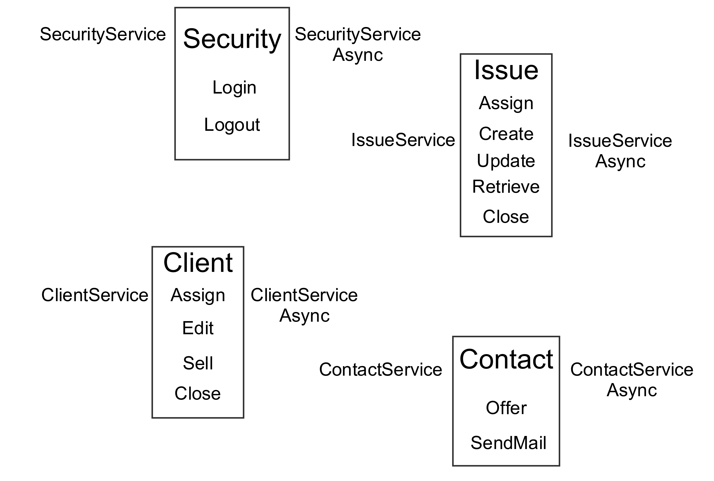Command in action
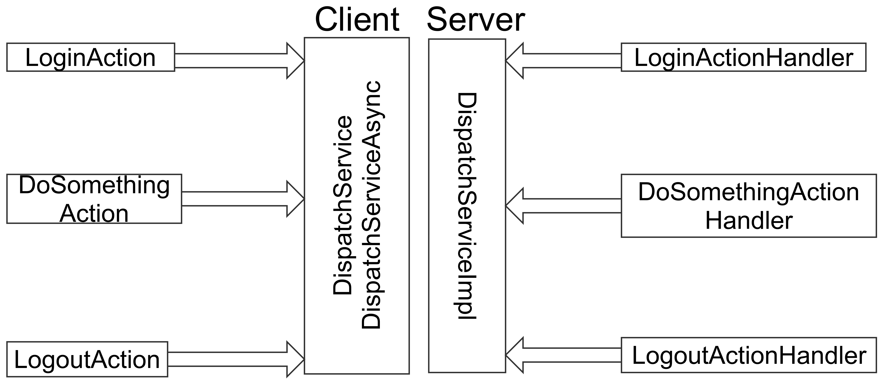GWT PRC is about serialization
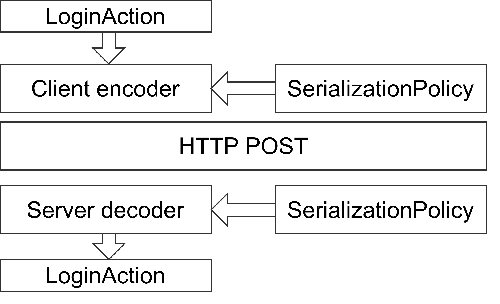GWT RPC Payload
Request: 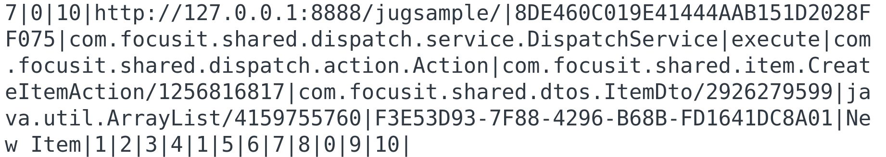
Response: 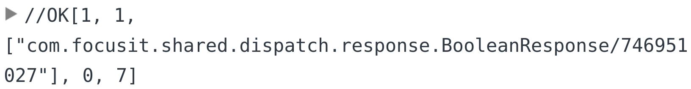
Альтернативы
- RequestBuilder + JSON
- REST. https://resty-gwt.github.io/
- Apache Thrift. https://thrift.apache.org/
Thrift request
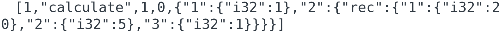Thrift response
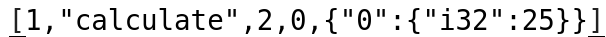GWT модули
app.gwt.xml
GWT модули
app.gwt.xml
GWT модули
app.gwt.xml
GWT ⇋ Javascript
- Вызов JS
public static native void alert(String msg) /*-{ $wnd.alert(msg); }-*/; - Вызов GWT кода из JS
public MyUtilityClass{ public static int computeLoanInterest(int amt, float interestRate, int term) { } public static native void exportStaticMethod() /*-{ $wnd.computeLoanInterest = $entry(@mypackage.MyUtilityClass::computeLoanInterest(IFI)); }-*/; }
Build process
GWT Debugging
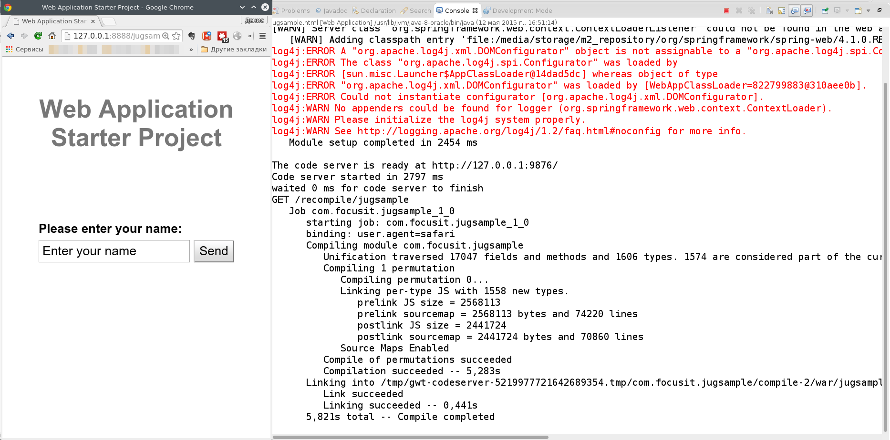Super Dev Mode Debug
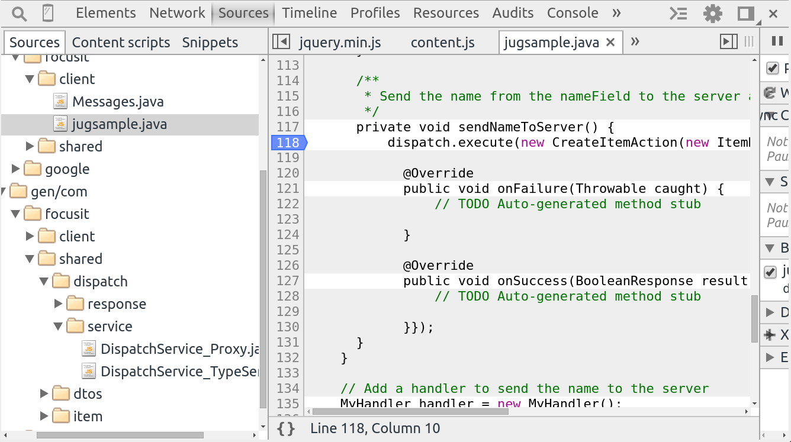Super Dev Mode Debug cont.
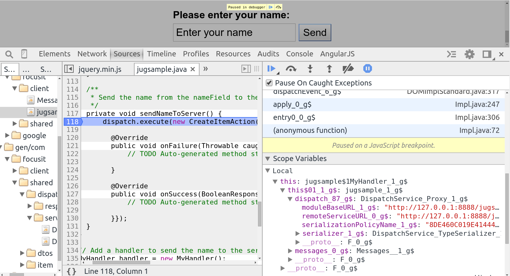When something went wrong
Обработка unhandled exception
public class Example implements EntryPoint {
public void onModuleLoad() {
GWT.setUncaughtExceptionHandler(new
GWT.UncaughtExceptionHandler(){
public void onUncaughtException(Throwable e)
{
// Обработка исключения
// Вывод в консоль браузера
// Отправка на сервер для записи в Log
}
});
}
}Как выглядит исключение
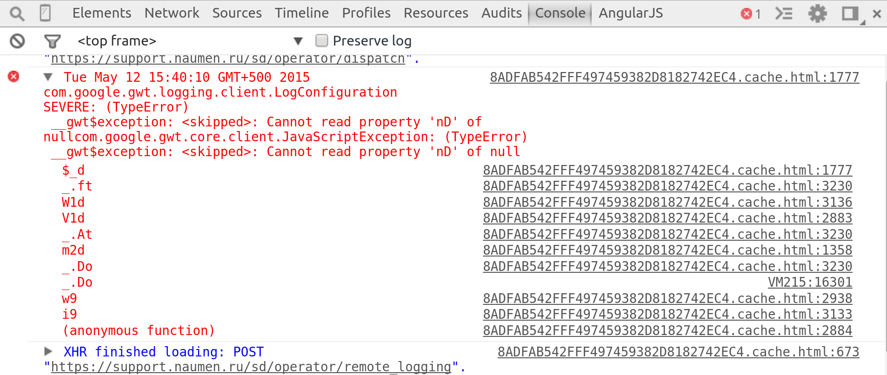 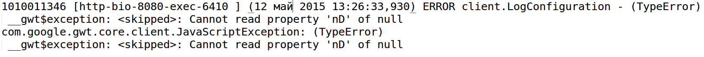Разбор исключения
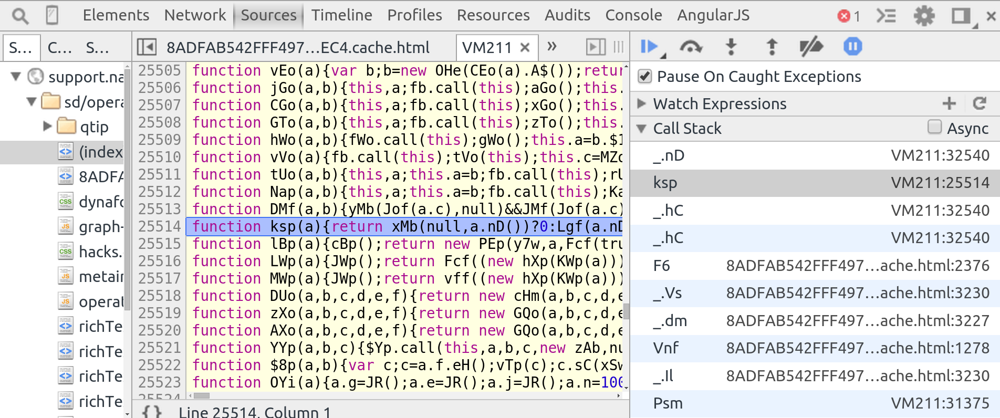Получение stack'а ошибки
SymbolMaps
├── rpcPolicyManifest
│ ├── manifests
│ │ ├── 00B81EDF1ED878A9499F77A6BD72F97F.txt
│ │ ├── 27129259FF55ECBA1F313FA0BADCBA06.txt
│ │ └── CC6E72C03242CD463A2772C4EB4319A3.txt
│ └── manifest.txt
└── symbolMaps
├── 13210C7473C45016FBFC764429C5C72E.symbolMap
├── 3E4B428A471EFD1DC803630D26A049E0.symbolMap
├── 404EF130736C6AC4DE2BD3A75256BD93.symbolMap
├── 62BE5A8854B6B01F24C28CAAF8042C17.symbolMap
├── 748D3FC843595E743A328BC78E15A9C1.symbolMap
├── 8ADFAB542FFF497459382D8182742EC4.symbolMap
├── 8DD9F56074FF19AFDD37F4A9273CC6F6.symbolMap
├── 9770311386402AEAA5B61BFAF6D8B0BD.symbolMap
├── C4F82D4876541A04B1F97B261F3D6517.symbolMap
└── D6682ADEC5C101DDB41DDA2392DBD6AF.symbolMap